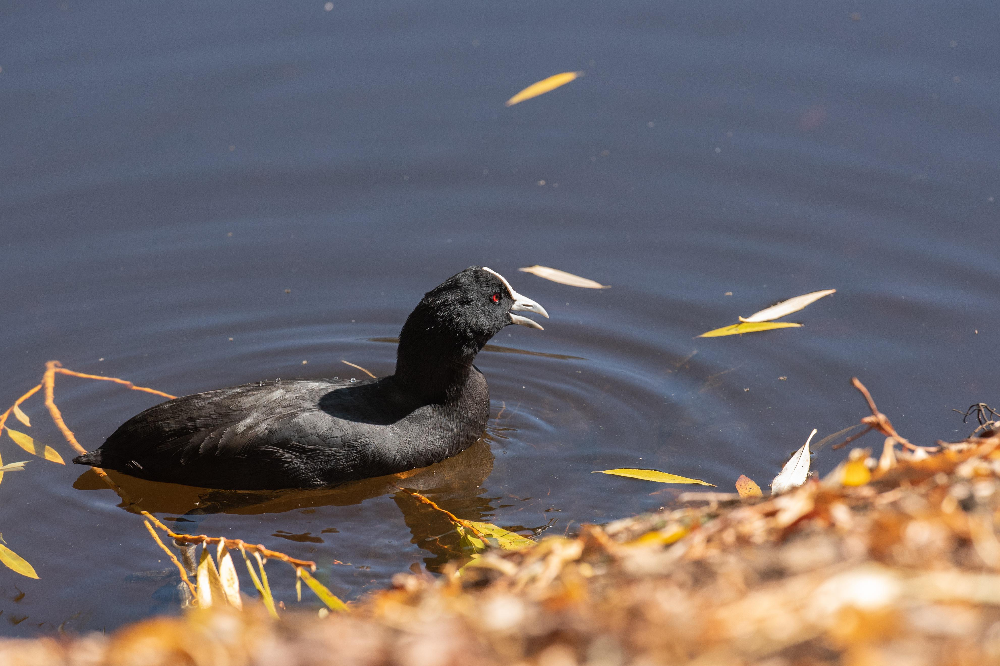

The Eurasian Coot is a dark waterbird with almost entirely black plumage, a white bill, and a distinctive white frontal shield above the bill. It is commonly found on lakes, ponds, reservoirs, marshes, and slow-moving waters, where it swims strongly and often dives for food. It has broad lobed toes rather than fully webbed feet, allowing it to walk across muddy vegetation as well as swim efficiently. Compared with the Common Moorhen, the Eurasian Coot is generally larger and darker, while the Moorhen has a red-and-yellow bill and a conspicuous white flank stripe. The Coot's white frontal shield is also much larger and more prominent than the markings of the Moorhen. Compared with the Grey-headed Swamphen, the Coot is smaller and almost entirely black rather than having the Swamphen's blue-purple plumage and massive red bill. Unlike ducks, the Coot has a rounded body, lobed toes, and a distinctive white frontal shield rather than a typical duck-shaped bill. The Little Grebe is much smaller and has a pointed bill and a different compact body shape. The combination of black plumage, white bill and frontal shield, and strong swimming ability makes the Eurasian Coot readily distinguishable from other common wetland birds.